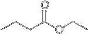
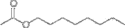
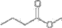
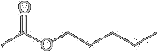
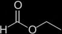

Esters
The functional group of a carboxylic ester is an acyl group bonded to −OR or −OAr.

Dal punto di vista della nomenclatura IUPAC gli esteri si trattano come alcanoati di alchile. Gli esteri sono contraddistinti dal suffisso oato. Both IUPAC and common names of esters are derived from the names of the parent carboxylic acids. The alkyl or aryl group bonded to oxygen is named first, followed by the name of the acid in which the suffix -ic acid is replaced by the suffix -ate.:
Formiato di metile

Etanoato di etile

Propanoato di metile.

Lactones: Cyclic Esters
Cyclic esters are called lactones. The IUPAC system has developed a set of rules for naming these compounds. Nonetheless, the simplest lactones are still named by dropping the suffix -ic acid or -oic acid from the name of the parent carboxylic acid and adding the suffix -olactone. The location of the oxygen atom in the ring is indicated by a number if the IUPAC name of the acid is used, or by a Greek letter α, β, γ, δ, ε, and so forth, if the common name of the acid is used.
Esters of Phosphoric Acid
Phosphoric acid has three −OH groups and forms mono-, di-, and triesters, which are named by giving the name(s) of the alkyl or aryl group(s) bonded to oxygen followed by the word phosphate, as for example dimethyl phosphate. In more complex phosphoric esters, it is common to name the organic molecule and then indicate the presence of the phosphoric ester using either the word phosphate or the prefix phospho-. On the right are two phosphoric esters, each of special importance in the biological world.
Glyceraldehyde 3-phosphate is an intermediate in glycolysis, the metabolic pathway by which glucose is converted to pyruvate. Pyridoxal phosphate is one of the metabolically active forms of vitamin B6 . Each of these esters is shown as it is ionized at pH 7.4, the pH of blood plasma; the two hydroxyl groups of these phosphoryl groups are ionized giving each a charge of 22. The molecular backbones of both DNA and RNA contain phosphoric diesters in each repeating unit.
Naturally occurring esters are present in both animals and plants. Small-sized esters, along with other volatile organic compounds, are responsible for the smells of fruits. Often, one compounds plays a major role in producing the fruity smell, e.g. the fragrance of peneapples is mainly due to ethyl butanoate. Different esters have different fragrances and flavours and various synthetic esters are used as flavourings in the food industry.
 |  |  |
| Ethyl butanoate (pineapple flavouring) | Octyl ethanoate (orange odour) | Methyl butanoate (apple odour) |
 |  |  |
 Methyl benzoate Methyl benzoate(marzipan odour) | Pentyl ethanoate (banana odour) | Ethyl methanoate (rum flavouring) |
Food and beverage manufacturers are thoroughly familiar with these esters and often use them as additives to spruce up the flavor or odor of a dessert or beverage. Many times odors do not have a natural basis, as is the case with the “juicy fruit” principle, isopentenyl acetate. An instant pudding that has the flavor of rum may never have seen its alcoholic namesake—this flavor can be duplicated by the proper admixture, along with other minor components, of ethyl formate and isobutyl propionate. The natural flavor and odor are not exactly duplicated, but most people can be fooled. Often only a trained person with a high degree of gustatory perception, a professional taster, can tell the difference.
Although the “fruity” tastes and odor of esters are pleasant, they are seldom used in perfumes or scents that are applied to the body. The reason for this is that the ester group is not as stable to perspiration (Hydrolysis of an ester results to the disappearance of its pleasant odor) as the ingredients of the more expensive essential oils. The latter are usually hydrocarbons (terpenes), ketones and ethers extracted from natural sources. Butyric acid, for instance, has a strong odor like that of rancid butter (of which it is an ingredient) and is a component of what we normally call body odor. Ethyl butyrate and methyl butyrate, however, are esters that smell like strawberry and apple, respectively.